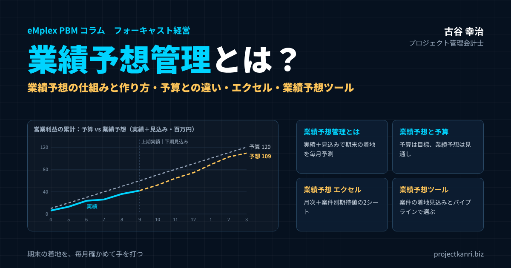

業績予想管理とは？業績予想の仕組みと作り方、予算との違い、エクセルテンプレート、業績予想ツールの選び方まで

結論：業績予想管理は「期末の着地を、毎月確かめて手を打つ」ための仕組みです
この記事の要点
- 業績予想管理とは：実績＋残りの見込みで期末の着地を予測し、毎月更新して先回りする仕組み
- 予算との違い：予算は「目標」、業績予想は「見通し」。予算は変えずに差を議論する
- 作り方：受注残＋確度別パイプラインの期待値＋継続売上で積み上げる
- 業績予想 エクセル：月次の予算・実績・見込みと案件別期待値の2シートを無料ダウンロード
- 業績予想ツール：案件ごとの着地見込みとパイプラインを扱えるかで選ぶ
プロジェクト管理会計士の古谷です。今回は、経営管理の中でも、経営者が最も気にかける数字の一つである、業績予想の管理を取り上げます。
「今期はどこに着地しそうか」。経営者であれば、毎月のように自問している問いだと思います。ところが、多くの会社で、この問いに対する答えは、経営者の頭の中や、担当者のエクセルの中にあり、組織として共有された仕組みにはなっていません。そのため、期末が近づいてから予算に届かないことが分かり、慌てて手を打つ、ということが繰り返されます。
私は、エンプレックスでCFOとして経営管理と上場準備に携わり、ホリプロでは上場会社の経営企画として、開示や業績の見通しの管理に関わってきました。独立してからも、200社を超える会社の経営管理を支援する中で、業績予想の仕組みづくりに数多く携わってきました。
結論から申し上げます。業績予想管理とは、期末の着地を毎月確かめ、予算との差が見えた時点で手を打つための仕組みです。予算は年に一度立てる目標ですが、業績予想は毎月更新する見通しです。この二つを並べて見ることで、経営は「結果を待つ」管理から「先回りする」管理へと変わります。
本稿では、業績予想管理とは何か、予算との違いと関係、上場会社の業績予想と修正の開示、業績予想管理の仕組みの全体像、プロジェクト型ビジネスでの業績予想の作り方、月次の運用、エクセルでの作り方、そして業績予想のツールの選び方までを、順を追ってお伝えします。記事の中で、そのまま使える業績予想のエクセルのテンプレートもダウンロードできます。
業績予想管理とは：実績と見込みで、期末の着地を予測し続けること
業績予想とは、会社の売上高や利益などの業績が、期末にどこに着地するかを予測したものです。着地見込み、業績見通し、フォーキャストなどとも呼ばれます。
業績予想管理とは、この業績予想を、すでに確定した実績と、これからの見込みをもとに作成し、毎月、あるいは四半期ごとに更新して、予算との差を確かめ、経営の判断に生かす仕組みのことです。
| 数字 | 内容 | 更新 |
|---|---|---|
| 予算 | 期首に立てる、その期の目標 | 原則として期中は変えない |
| 実績 | すでに確定した売上・費用・利益 | 月次の締めで確定 |
| 業績予想（着地見込み） | 実績＋残りの月の見込み＝期末の着地 | 毎月（または四半期ごと）更新 |
業績予想の基本の式は、とてもシンプルです。期首から当月までの実績に、残りの月の見込みを加えたものが、期末の業績予想です。たとえば、上期の六か月の売上の実績が五億七千万円で、下期の六か月の売上の見込みが六億九千万円であれば、年間の売上の業績予想は十二億六千万円になります。
大切なのは、業績予想を一度作って終わりにしないことです。月が進むごとに、実績の月が増え、見込みの月が減っていきます。毎月、確定した実績を反映し、残りの月の見込みを見直すことで、業績予想の精度は期末に向かって高まっていきます。
業績予想管理は、フォーキャスト経営やフォーキャストマネジメントと呼ばれる考え方の中心にある仕組みです。予算と実績を比べて過去を振り返るだけでなく、業績予想で未来を見通し、先回りして手を打つ。それが、業績予想管理の目的です。
業績予想の対象は、売上高と営業利益が中心ですが、会社によっては、受注高、粗利、経常利益、当期純利益、さらには人員数や資金の残高まで含めて見通しを作ります。何を予想の対象にするかは、経営の判断に何が必要かで決めます。最初は売上高と営業利益から始め、必要に応じて対象を広げていくのが現実的です。
なぜ業績予想管理が必要なのか
業績予想管理がない会社では、次のようなことが起きがちです。
| 起きること | 結果 |
|---|---|
| 予算未達に気づくのが期末直前 | 打てる手が残っていない |
| 見通しが経営者の頭の中だけ | 組織で共有されず、判断が属人的 |
| 資金・採用・投資の計画が勘頼み | 資金繰りや人員計画の失敗 |
| 外部に見通しを説明できない | 金融機関・投資家・市場の信頼低下 |
最大の問題は、手を打つ時期が遅れることです。予算に届かないことが分かるのが期末の直前では、打てる手はほとんど残っていません。業績予想を毎月更新していれば、期の半ばで予算との差に気づき、営業の強化、費用の見直し、案件の前倒しといった手を打つ時間が残ります。
もう一つは、資金と人の計画です。業績の見通しが立たなければ、資金繰りの計画も、採用の計画も、投資の判断も、勘に頼ることになります。業績予想は、売上や利益だけでなく、資金や人の計画の土台でもあるのです。
そして、金融機関や投資家、上場会社であれば市場への説明です。業績の見通しを根拠をもって説明できる会社は、外部からの信頼を得やすくなります。
上場会社の業績予想と、業績予想の修正の開示
業績予想という言葉は、上場会社の開示の文脈でもよく使われます。多くの上場会社は、決算短信で、今期の売上高や営業利益、経常利益、当期純利益などの業績予想を開示しています。
そして、一度開示した業績予想と、新たに算出した予想値との間に大きな差が生じた場合には、業績予想の修正として、速やかに開示することが求められます。目安となる基準は、売上高では十パーセント以上、営業利益、経常利益、当期純利益では三十パーセント以上の変動です。
| 項目 | 直近の予想値からの変動の目安 |
|---|---|
| 売上高 | 10%以上 |
| 営業利益 | 30%以上 |
| 経常利益 | 30%以上 |
| 親会社株主に帰属する当期純利益 | 30%以上 |
詳細な基準や例外は、取引所の規則・ガイドブックで確認してください。
上場会社にとって、業績予想の修正は、株価や市場の信頼に大きく影響する出来事です。修正の開示が遅れれば、市場からの信頼を損ないます。だからこそ、上場会社では、社内で業績予想を毎月更新し、開示した予想とのずれを常に把握しておく仕組みが欠かせません。社内の業績予想管理は、適時開示の体制の土台でもあるのです。
上場を準備している会社にとっても、業績予想管理は重要です。上場の審査では、事業計画や予算の達成の状況、予算と実績の差異の分析と、それへの対応が確認されます。業績予想を毎月更新し、予算との差を分析して手を打つ仕組みが運用されていることは、予算統制が機能していることの証明になります。
もちろん、未上場の会社にとっても、業績予想管理の価値は変わりません。金融機関への説明、投資家への報告、そして何より、経営者自身の判断のために、業績予想の仕組みを整えておくことをお勧めします。
なお、業績予想の開示の方法や、修正の開示の詳しい基準、例外の取り扱いは、取引所の規則や会社情報適時開示ガイドブックなどで確認してください。上場会社では、社内の業績予想の更新の時期と、開示の判断の手続きを、あらかじめ規程や手順書で定めておくことが大切です。
業績予想と予算の違い・関係：目標と見通しを並べて見る
業績予想と混同されやすいのが、予算です。二つは似ていますが、役割がまったく異なります。
| 観点 | 予算 | 業績予想 |
|---|---|---|
| 性格 | 目標・約束 | 見通し・予測 |
| 作る時期 | 期首（年1回） | 毎月・四半期ごと |
| 期中の変更 | 原則変えない（大きな前提変化時は修正予算） | 実績と状況に合わせて更新 |
| 問い | 何を目指すか | このままいくとどこに着地するか |
| 使い方 | 評価と方向づけの基準 | 差に先回りして打ち手を決める |
予算は、期首に立てる、その期の目標です。会社として、この売上と利益を目指すという約束であり、原則として期中には変えません。一方、業績予想は、このままいくと期末にどこに着地するかという見通しです。実績と状況の変化を反映して、毎月更新します。
業績予想の管理で大切なのは、予算と業績予想を混同しないことです。業績予想が予算を下回りそうだからといって、予算そのものを下方修正してしまうと、目標が見えなくなります。予算は目標として残したまま、業績予想との差を見える化し、その差をどう埋めるかを議論するのが、正しい使い方です。
ただし、期中に事業の前提が大きく変わった場合、たとえば大口の顧客を失った、大型の案件を受注したといった場合には、予算そのものを見直す修正予算を立てることもあります。修正予算を立てる場合も、当初の予算は記録として残し、当初の予算、修正予算、業績予想、実績を並べて見られるようにしておきます。
「業績予想予算」という言葉で、予算と業績予想を一つの表で管理する方法を探している方も多いと思います。私がお勧めしているのは、月別に、予算、実績、そして実績が確定していない月の見込みを並べ、年間の合計で予算と業績予想を比べる形です。この形については、後ほどエクセルのテンプレートでご紹介します。予算そのものの立て方や、予算と実績の比較の進め方については、予実管理のコラムもあわせてご覧ください。
業績予想と予算の関係を、社内でどう呼ぶかも決めておくとよいでしょう。会社によって、見込み、着地見込み、予想、フォーキャスト、修正予算など、さまざまな言葉が使われ、同じ言葉が違う意味で使われていることもあります。言葉の定義を社内で統一しておくだけで、経営会議での議論の混乱は大きく減ります。
業績予想管理の仕組み：四つの要素で全体を設計する
業績予想管理を仕組みとして機能させるには、四つの要素を設計する必要があります。
| 要素 | 設計すること |
|---|---|
| データ | 実績（会計）、売上見込み（営業・案件）、費用見込み（各部門）の出どころと単位 |
| プロセス | 実績の締め、見込みの更新、予想の確定の日程と役割 |
| 会議体 | 業績予想を議論し、打ち手を決める会議と進め方 |
| ツール | エクセル、または業績予想・予算管理・プロジェクト管理会計のシステム |
一つ目は、データです。業績予想の元になる実績と見込みのデータを、どこから、どの単位で集めるかを決めます。実績は会計のデータから、売上の見込みは営業やプロジェクトの管理のデータから、費用の見込みは各部門の計画から集めます。
二つ目は、プロセスです。毎月、いつ実績を締め、いつ見込みを更新し、いつ業績予想を確定させるかという日程と、誰が何を担うかという役割を決めます。
三つ目は、会議体です。業績予想を、どの会議で、誰が、どのように議論し、打ち手を決めるかを決めます。業績予想は、議論に使われて初めて価値を持ちます。
四つ目は、ツールです。エクセルで管理するのか、業績予想のツールやシステムを使うのかを決めます。ツールは、データ、プロセス、会議体の設計を支えるものであり、ツールだけを導入しても、業績予想管理は機能しません。
この四つの要素がそろって初めて、業績予想管理は、担当者の頑張りに頼らない、組織の仕組みになります。
業績予想の作り方：プロジェクト型ビジネスは「受注残」と「確度」で積み上げる
業績予想の作り方には、大きく二つの方法があります。一つは、過去の傾向や前年の実績をもとに、全体の数字を推計するトップダウンの方法です。もう一つは、案件や部門ごとの見込みを積み上げるボトムアップの方法です。
プロジェクト型ビジネスでは、ボトムアップの方法、つまり案件ごとの見込みの積み上げが基本になります。売上が案件ごとに発生し、その金額や時期が案件によって大きく異なるため、全体の傾向からの推計では精度が出にくいからです。
| 区分 | 内容 | 根拠 |
|---|---|---|
| 売上：受注残 | 受注済み案件の残りの売上 | 契約・計上予定（検収・進捗） |
| 売上：パイプライン | 提案・交渉中の案件 | 確度ランク×掛け率の期待値 |
| 売上：継続 | 保守・月額契約など | 契約の金額と期間 |
| 費用：案件原価 | 案件ごとの原価の着地見込み | 実績原価＋残作業の見込み |
| 費用：固定費 | 人件費・家賃・販管費 | 採用計画・契約・予算 |
売上の業績予想は、三つの層に分けて積み上げます。一つ目は、すでに受注している案件の、残りの売上、いわゆる受注残です。契約が結ばれており、計上の時期の見通しも立っているため、最も確度の高い層です。二つ目は、まだ受注していないものの、提案や交渉が進んでいる案件、いわゆるパイプラインです。三つ目は、継続的な保守や月額の契約による売上です。
費用の業績予想は、案件ごとの原価の見込みと、固定的な費用に分けて考えます。案件の原価は、プロジェクトごとの着地見込みの原価、つまり実績の原価に残りの作業の見込みを加えたものから積み上げます。人件費や家賃などの固定費は、採用の計画や契約をもとに見込みます。
このように積み上げて作った業績予想は、数字の一つひとつに根拠があるため、予算との差が生じたときにも、どの案件の、どの要因で差が生じているのかを説明できます。この説明できることこそが、ボトムアップの業績予想の最大の価値です。
トップダウンの推計も、まったく使わないわけではありません。ボトムアップで積み上げた業績予想が、過去の傾向や前年の実績から見て妥当な範囲にあるかを確かめるための、検証の道具として使います。両者が大きく食い違う場合は、どちらかの前提に問題がある可能性があります。
受注見込みの確度ランクと期待値：楽観的な見込みを防ぐ
パイプラインの案件を業績予想に入れる際に問題になるのが、営業の担当者の見込みが楽観的になりがちなことです。「この案件は取れると思います」という見込みを、すべてそのまま業績予想に入れると、業績予想は実態より大きくなってしまいます。
そこで役立つのが、確度のランクと期待値の考え方です。案件を受注の可能性に応じてランクに分け、ランクごとの掛け率を金額に掛けて、期待値として業績予想に入れます。
| ランク | 定義（客観的な事実で決める） | 掛け率の例 |
|---|---|---|
| 受注済 | 契約締結済み | 100% |
| A | 内示を受けた・最終条件の調整中 | 80% |
| B | 見積り・提案を提出し、比較検討されている | 50% |
| C | 引き合い・初期の相談段階 | 20% |
掛け率は自社の過去の受注実績から見直します。
大切なのは、ランクの定義を、担当者の感覚ではなく、客観的な事実で決めることです。「取れそう」ではなく、「内示を受けた」「見積りを提出し、競合と比較されている」「引き合いの段階」といった、誰が判断しても同じランクになる基準を定めます。掛け率は、過去の受注の実績から、ランクごとの実際の受注率を確かめて見直します。
| 確度 | 案件の金額合計 | 掛け率 | 期待値（業績予想に入れる額） |
|---|---|---|---|
| 受注済（継続契約を含む） | 410 | 100% | 410 |
| A | 175 | 80% | 140 |
| B | 220 | 50% | 110 |
| C | 150 | 20% | 30 |
| 合計 | 955 | 690 |
エクセルテンプレートの「売上見込み（案件別）」シートと同じ数字です。
上の例では、下期の売上の業績予想は六億九千万円です。そのうち四億一千万円は受注済みの案件と継続の契約で、残りの二億八千万円は、確度のランクに応じた期待値です。パイプラインの金額の合計は五億四千五百万円ありますが、期待値で見ると二億八千万円にとどまります。営業の担当者が見込む金額をそのまま積み上げていれば、業績予想は二億円以上も大きくなっていたことになります。
期待値は、個々の案件については外れることがあります。確度Aの案件が失注することもあれば、確度Cの案件が受注できることもあります。期待値は、多くの案件を合計したときに、全体として実態に近い数字になることを狙った考え方です。案件の数が少ない会社では、大型の案件の受注の有無で業績予想が大きく変わるため、後で述べる三つのシナリオの考え方と組み合わせて使うことをお勧めします。
先行指標で業績予想の精度を高める
業績予想の精度を高めるには、売上や利益といった結果の数字だけでなく、その結果に先立って動く先行指標を見ることが有効です。
| 先行指標 | 何の兆候か |
|---|---|
| 受注高 | 数か月後の売上 |
| 受注残 | 来期の売上の基盤 |
| 商談・提案の件数と金額 | さらに先の受注 |
| 確度A・Bの案件の金額 | 近い将来の受注の見込み |
| 社員の稼働率 | 売上を生み出す能力と余力 |
プロジェクト型ビジネスの代表的な先行指標は、受注高と受注残です。今月の受注は、数か月後の売上になります。受注のペースが落ちていれば、数か月後の売上が下がる兆候です。受注残が減っていれば、来期の売上の基盤が弱くなっていることを示しています。
商談の件数や金額、提案の件数も、さらに先の受注の先行指標になります。そして、社員の稼働率は、売上を生み出す能力の指標です。稼働率が高止まりしていれば、受注を増やしても対応できる人がいないことを示し、低ければ、売上を生み出す余力が使われていないことを示します。
こうした先行指標を業績予想と並べて見ることで、業績予想の数字の裏にある勢いや変化に気づくことができます。業績予想の数字が予算どおりでも、受注のペースが落ちていれば、来期に向けた手を早めに打つ必要があります。
費用の業績予想：原価と固定費をどう見込むか
売上の業績予想に比べて、費用の業績予想は軽く扱われがちです。しかし、先の例のように、売上が予算を上回っていても、費用の見込みが外れれば利益は届きません。費用の業績予想も、根拠をもって作る必要があります。
プロジェクト型ビジネスの費用の中心は、案件の原価です。受注済みの案件については、プロジェクトマネージャーが更新する着地見込みの原価を使います。実績の原価に、残りの作業にかかる原価の見込みを加えたものです。原価が予算を超えそうな案件があれば、その超過がそのまま業績予想に反映されます。
まだ受注していないパイプラインの案件の原価は、過去の同じ種類の案件の原価率をもとに見込みます。ただし、過去の原価率が実際より良く見えていないかには注意が必要です。工数が正しく記録されておらず、労務費が原価に十分に入っていなければ、原価率は実態より低く見えます。
人件費、家賃、システムの利用料などの固定的な費用は、契約や採用の計画から見込みます。特に人件費は、採用の時期によって大きく変わります。採用の計画を人事と共有し、入社の予定の月から人件費を見込みに入れます。
費用の見込みで見落とされがちなのが、期末に向けて発生する費用です。賞与、決算の作業の費用、期末の在庫や仕掛品の評価、受注損失引当金など、期末にまとめて発生する費用を、あらかじめ見込みに入れておかないと、期末に利益が想定より下振れします。
業績予想管理の月次プロセス
業績予想管理は、毎月同じ日程で回し続けることで、組織の仕組みになります。月次のプロセスの例を示します。
| 時期 | やること | 担当 |
|---|---|---|
| 第1〜5営業日 | 前月の実績の締め | 経理 |
| 第3〜6営業日 | 案件の売上計上予定・原価の着地見込みの更新 | PM |
| 第3〜6営業日 | パイプラインの確度・金額・時期の更新 | 営業責任者 |
| 第6〜7営業日 | 業績予想の取りまとめ、予算との差の分析 | 経営企画・FP&A |
| 経営会議 | 差の要因と打ち手の決定、シナリオの確認 | 経営陣 |
このプロセスで最も大切なのは、実績の締めの早さです。前月の実績が確定するのが月の半ばでは、業績予想の更新も遅れ、経営会議での議論も遅れます。月次の決算をできるだけ早く締めることが、業績予想管理の前提です。
もう一つ大切なのは、見込みの更新を担当者任せにしないことです。営業の見込みは営業の責任者が、案件の原価の見込みはプロジェクトマネージャーが、費用の見込みは各部門の責任者が更新し、経営企画やFP&Aが全体を取りまとめます。誰が、どの数字に責任を持つのかを明確にしておくことで、業績予想は組織の数字になります。
月次のプロセスに加えて、四半期の区切りでは、業績予想をより丁寧に見直すことをお勧めします。四半期ごとに、残りの期間の見込みを部門ごとに精査し、必要に応じてシナリオを見直します。上場会社であれば、四半期の決算の発表の前に、開示している業績予想との差を必ず確認します。
予算と業績予想の差を分析し、打ち手を決める
業績予想を作ったら、予算との差を分析します。差がどこから生まれているのかを分解し、打ち手を決めることが、業績予想管理の目的です。
| 項目 | 予算 | 業績予想（上期実績＋下期見込み） | 差 |
|---|---|---|---|
| 売上高 | 1,200.0 | 1,260.0 | ＋60.0 |
| 売上原価 | 840.0 | 900.8 | ＋60.8 |
| 粗利 | 360.0 | 359.2 | ▲0.8 |
| 販売費及び一般管理費 | 240.0 | 250.0 | ＋10.0 |
| 営業利益 | 120.0 | 109.2 | ▲10.8 |
| 営業利益率 | 10.0% | 8.7% | ▲1.3pt |
下期の原価率が予算70%に対し見込み72%。エクセルテンプレートと同じ数字です。
上の例では、年間の売上の業績予想は十二億六千万円で、予算の十二億円を六千万円上回っています。一見すると順調ですが、営業利益の業績予想は一億九百二十万円で、予算の一億二千万円を一千八十万円下回る見込みです。売上は予算を上回るのに利益が届かない原因は、下期の原価率が予算の七十パーセントから七十二パーセントに悪化する見込みであること、そして販売費及び一般管理費が予算を一千万円上回る見込みであることにあります。
このように差を分解すると、打ち手の議論が具体的になります。原価率の悪化が、特定の案件の原価の超過によるものなら、その案件の対策を検討します。販売費及び一般管理費の増加が、採用の前倒しによるものなら、それが来期の売上の成長につながる投資なのかを確かめます。差を分解せずに「利益が足りない」とだけ議論しても、打ち手は決まりません。
差の分析では、売上については受注済みとパイプライン、案件の種類や顧客ごとに、費用については原価と販売費及び一般管理費、費目ごとに分解していきます。そして、差の大きい要因から順に、打ち手を検討します。
業績予想を議論する経営会議の進め方
業績予想は、経営会議で議論されて初めて価値を持ちます。業績予想を使った経営会議の進め方の例をご紹介します。
まず、全体の業績予想と、予算との差を確認します。売上と利益の業績予想が、予算に対してどれだけ上回っているか、下回っているか。そして、前月の業績予想からどれだけ変わったかを確認します。前月からの変化は、状況の変化を最も早く映す指標です。
次に、差の要因を確認します。売上の差は、受注済みの案件の計上の時期のずれなのか、パイプラインの受注の見込みの変化なのか。費用の差は、案件の原価の超過なのか、固定費の増加なのか。要因ごとに、担当の責任者から説明を受けます。
そして、打ち手を決めます。予算との差を埋めるために、何をするのか。受注の確度の高い案件の前倒し、原価が超過しそうな案件の対策、費用の削減、あるいは来期への投資として費用の増加を受け入れるのか。打ち手には、担当者と期限を決め、翌月の会議で結果を確認します。
会議の時間の多くを、数字の説明ではなく、打ち手の議論に使うことが大切です。そのためには、業績予想と差の分析の資料を、会議の前に配布しておきます。経営会議の進め方については、役員会の運営のコラムでも詳しく解説しています。
業績予想を「幅」で捉える：3シナリオの活用
業績予想は、一つの数字だけで示すと、その不確実性が見えなくなります。特に、大型の案件の受注や、案件の検収の時期によって業績が大きく動くプロジェクト型ビジネスでは、業績予想を楽観、現実、悲観の三つのシナリオの幅で捉えることが有効です。
| シナリオ | 前提の例 |
|---|---|
| 楽観 | 確度A・Bの大型案件が予定どおり受注、検収も予定どおり |
| 現実 | 確度ランクの期待値で積み上げた、最も可能性の高い予想 |
| 悲観 | 大型案件の失注、受注済み案件の検収の翌期ずれ込み、原価超過 |
現実のシナリオは、確度のランクの期待値で積み上げた、最も可能性の高い業績予想です。楽観のシナリオは、確度Aや確度Bの大型の案件が予定どおりに受注できた場合、悲観のシナリオは、それらが失注した場合や、受注済みの案件の検収が翌期にずれ込んだ場合です。
三つのシナリオを示すことで、経営陣は、業績予想がどこまで振れる可能性があるのか、何が起きればどちらに振れるのかを知ることができます。そして、悲観のシナリオになりそうな兆候が見えたときの打ち手を、あらかじめ準備しておくことができます。三つのシナリオの作り方と使い方については、フォーキャスト経営の三シナリオ運用のコラムで詳しく解説しています。
ローリングフォーキャスト：期末の先まで見通す
業績予想管理をさらに進めた形が、ローリングフォーキャストです。期末までの業績予想を更新するだけでなく、常に一定の期間、たとえば十二か月先や十八か月先までの見通しを、毎月あるいは四半期ごとに更新し続ける方法です。
期末までの業績予想だけを見ていると、期末が近づくにつれて、見通しの期間が短くなっていきます。下期の終わりには、残りの数か月のことしか見えません。ローリングフォーキャストであれば、常に一年先までの見通しがあるため、来期の採用や投資の判断を、早めに行うことができます。
ローリングフォーキャストは、予算の代わりになるものではありません。予算は目標として残し、ローリングフォーキャストは見通しとして使います。ローリングフォーキャストの実務の運用については、別のコラムで詳しく解説していますので、あわせてご覧ください。
AIの時代の業績予想管理
近年は、AIを使って業績を予測する取り組みも広がっています。過去の実績のデータや、受注の状況、季節の変動などから、AIが業績の見通しを算出するというものです。
AIによる予測は、データが豊富で、事業のパターンが安定している場合には、有効な参考になります。ただし、プロジェクト型ビジネスでは、大型の案件の受注の有無や、個別の案件の状況が業績を大きく左右するため、過去のパターンだけでは予測しきれない部分が大きく残ります。
大切なのは、AIの予測を、人が積み上げた業績予想と比べる道具として使うことです。両者が大きく食い違う場合には、どちらかの前提を見直すきっかけになります。そして、業績予想の数字をもとに、どのような打ち手をとるかを決めるのは、最後は人の判断です。AIが進化するほど、業績予想の根拠を説明し、組織を動かす人の役割は、むしろ大きくなっていくと私は考えています。
業績予想と資金繰りの予想をつなげる
業績予想は、損益の見通しです。しかし、経営にとってもう一つ大切なのが、資金の見通しです。利益が出ていても、入金が遅ければ資金は不足します。業績予想とあわせて、資金繰りの予想も管理しておくことをお勧めします。
プロジェクト型ビジネスでは、売上の計上と入金の時期の間に、大きなずれが生じることがあります。検収の後、翌月末や翌々月末に入金されるのが一般的で、大型の案件では、着手から入金までに数か月以上かかることもあります。その間、社員の給与や外注費の支払は先に発生します。
業績予想の売上の見込みに、案件ごとの請求と入金の条件を組み合わせれば、入金の予想を作ることができます。費用の見込みに、支払の条件を組み合わせれば、出金の予想を作ることができます。この二つから、月ごとの資金の残高の見通しを作ります。
業績予想と資金繰りの予想がつながっていれば、大型の案件を受注したときに、資金が足りるかどうかを事前に確かめることができます。着手金や中間金の交渉、金融機関への借入れの相談も、早めに行うことができます。
業績予想をエクセルで作る：テンプレートと作り方
業績予想管理は、エクセルで始めることができます。この記事では、そのまま使える業績予想のエクセルのテンプレートを用意しました。
📥 業績予想管理表テンプレート（エクセル）をダウンロード
「業績予想（月次）」と「売上見込み（案件別）」の2シート構成。案件の確度別の期待値が月次の業績予想に自動で集計され、予算との差が計算されます。数値は説明のための例です。
| シート | 内容 |
|---|---|
| 業績予想（月次） | 売上高〜営業利益を月別に予算と実績・見込みで並べ、年間で予算との差を計算 |
| 売上見込み（案件別） | 案件ごとの確度・計上月・金額から期待値を計算し、月次シートへ自動集計 |
一つ目の「業績予想（月次）」のシートでは、月別に、売上高、売上原価、粗利、販売費及び一般管理費、営業利益を、予算と、実績・見込みの二段で並べています。上期の六か月は実績を入力し、下期の六か月は見込みです。下期の売上の見込みは、二つ目のシートの案件別の期待値が、計上の月ごとに自動で集計されます。売上原価の見込みは、見込みの原価率から計算されます。年間の合計で、予算と業績予想、その差が自動で表示されます。
二つ目の「売上見込み（案件別）」のシートでは、案件ごとに、確度、計上の月、金額を入力します。確度ごとの掛け率は右の表で設定でき、期待値が自動で計算されます。確度ごとの金額と期待値の合計も集計されます。
毎月の運用では、実績が確定した月の区分を「実績」に切り替えて実績を入力し、残りの月の見込みと、案件の確度、計上の月、金額を更新します。これを毎月続けることで、業績予想は期末に向かって精度を高めていきます。
エクセルで業績予想を作るときのポイントは、実績と見込みを同じ表の中で区別して並べること、売上の見込みを案件の積み上げと結びつけること、そして予算は変えずに残しておくことです。この三つを守れば、シンプルなエクセルでも、十分に機能する業績予想管理表を作ることができます。
テンプレートの例では、売上高は予算を六千万円上回る見込みですが、営業利益は予算を一千八十万円下回る見込みになっています。売上が予算を上回っていても利益が届かないという、業績予想管理でよく見られる状況を、数字で確かめていただけるようにしています。
エクセルによる業績予想管理の限界
エクセルの業績予想管理表は手軽ですが、会社の規模や案件の数が増えると、限界が見えてきます。
| 限界 | 起きること |
|---|---|
| データ収集の手間 | 会計・営業・PM・各部門からの転記で更新が遅れる |
| 版の管理 | 最新ファイルが分からない、前月の予想が上書きされる |
| 根拠の追跡 | 予想が変わった理由（どの案件の何か）を追えない |
| ミス | 数式の破損、転記の誤り |
最も大きいのは、データを集める手間です。実績は会計のシステムから、売上の見込みは営業の担当者から、案件の原価の見込みはプロジェクトマネージャーから、費用の見込みは各部門から集め、エクセルに転記する必要があります。この作業に時間がかかれば、業績予想の更新が遅れ、経営会議での議論も遅れます。
次に、バージョンの管理です。複数の人が見込みを更新するうちに、どのファイルが最新なのか分からなくなる。前月の業績予想と今月の業績予想を比べたくても、前月のファイルが上書きされている。こうした問題は、エクセルでの業績予想管理でよく起きます。
そして、根拠の追跡です。業績予想の数字が変わったとき、その理由が、どの案件の、どのような変化によるものなのかを、エクセルでは追いにくくなります。業績予想の価値は、数字そのものよりも、その根拠を説明できることにあります。
業績予想の見せ方：経営に伝わるグラフ
業績予想を経営会議で伝えるときには、表だけでなく、グラフを使うと全体の状況が一目で伝わります。
最もお勧めしているのが、累計の推移のグラフです。横軸に月をとり、予算の累計、実績の累計、そして実績の後に続く見込みの累計を線で描きます。期末の時点で、見込みの線が予算の線の上にあるか下にあるかで、予算を達成できそうかどうかが一目で分かります。見込みの線を、楽観と悲観の幅で帯のように描けば、不確実性も伝えられます。
もう一つは、予算と業績予想の差を、要因ごとに分解した滝グラフ、いわゆるウォーターフォールのグラフです。予算の利益から出発し、売上の増減、原価率の変化、販売費及び一般管理費の増減を、上がり下がりの棒で積み重ねて、業績予想の利益に至る様子を示します。どの要因が、どれだけ利益を押し上げ、押し下げているのかが、ひと目で分かります。
グラフは、毎月同じ形で示すことが大切です。形が毎回変わると、見る側は前月との違いを読み取れません。予実管理のグラフの作り方については、予実管理のコラムでも詳しく解説しています。
業績予想ツール・システムの種類と選び方
業績予想管理に使えるツールには、いくつかの種類があります。
| 種類 | 強み | 注意点 |
|---|---|---|
| エクセル・スプレッドシート | 手軽、自由に設計できる | 収集の手間・版管理・根拠の追跡 |
| 予算管理・経営管理システム | 予算・実績・見込みの一元管理、部門の集約 | 案件単位の見込みを扱えるか確認 |
| BIツール | データの統合と見える化 | 見込みの入力・更新の仕組みは別途必要 |
| CRM・SFA | パイプライン・確度の管理 | 受注後の案件の原価・着地は扱いにくい |
| プロジェクト管理会計システム | 案件ごとの予算・実績・着地見込みを管理 | 全社の予算管理との連携を確認 |
予算管理や経営管理に特化したシステムは、予算と実績、見込みを一つの基盤で管理し、部門ごとの数字を集約する機能に強みがあります。BIツールは、さまざまなデータを集めて分析し、グラフで見える化するのに向いています。CRMやSFAは、営業のパイプラインと確度の管理に強く、売上の見込みのデータ源になります。プロジェクト管理会計のシステムは、案件ごとの予算、実績、着地見込みを管理し、プロジェクト型ビジネスの業績予想の土台となる数字を整えます。
| 観点 | 確認すること |
|---|---|
| 一元管理 | 予算・実績・見込みを同じ基盤で管理できるか |
| 案件単位 | 案件ごとの売上計上予定と原価の着地見込みを扱えるか |
| パイプライン | 営業の確度・金額・時期とつながるか |
| 実績の取り込み | 会計の実績を手作業なしで取り込めるか |
| 版と根拠 | 月ごとの予想の履歴と、変更の理由を追えるか |
| 分析 | 予算との差の分解、シナリオ比較、ローリングに対応するか |
プロジェクト型ビジネスで業績予想のツールを選ぶ際に特に重視していただきたいのは、案件ごとの着地見込みを扱えるかどうかです。会社全体の業績予想は、案件ごとの売上の見込みと原価の見込みの積み上げで決まります。案件の単位の見込みを管理できないツールでは、業績予想の根拠を説明できません。
また、営業の見込みと案件の管理がつながっているかどうかも重要です。受注の前のパイプラインの段階から、受注後の案件の管理まで、一貫して数字を追えることが理想です。
ツールを選ぶ前に、自社の業績予想管理の業務の流れ、つまり、誰が、いつ、どの数字を更新し、誰がそれを取りまとめ、どの会議で議論するのかを書き出しておくことをお勧めします。この流れが整理できていれば、ツールに求める機能が明確になり、選定の判断もしやすくなります。
業績予想管理の役割分担：誰が、どの数字に責任を持つか
業績予想は、一人の担当者だけでは作れません。関わる人それぞれが自分の数字に責任を持つことで、組織の業績予想になります。
| 担い手 | 責任を持つ数字・役割 |
|---|---|
| 経営企画・FP&A | 業績予想の取りまとめ、差の分析、見込みの根拠の確認 |
| 営業責任者 | パイプラインの確度・金額・計上時期 |
| プロジェクトマネージャー | 案件の売上計上時期と原価の着地見込み |
| 各部門の責任者 | 部門の費用の見込み |
| 経理 | 実績を正確に早く締める |
| 経営者 | 打ち手と資源配分の判断 |
経営企画やFP&Aは、業績予想の取りまとめ役です。各部門から見込みを集め、全体の業績予想を作り、予算との差を分析して、経営会議に報告します。単に数字を集計するだけでなく、見込みの根拠を確かめ、楽観的すぎる見込みや、根拠の乏しい見込みに疑問を投げかけることも、大切な役割です。
営業の責任者は、売上の見込み、特にパイプラインの案件の確度と金額と時期に責任を持ちます。プロジェクトマネージャーは、担当する案件の売上の計上の時期と、原価の着地見込みに責任を持ちます。経理は、実績を正確に、早く締めます。そして経営者は、業績予想をもとに打ち手を決め、資源の配分を判断します。
正直な見込みが集まる組織をつくる
業績予想の精度を最終的に左右するのは、見込みを出す人が、正直な数字を出せるかどうかです。どれほど優れた仕組みやツールがあっても、見込みが楽観的に、あるいは保守的に歪められていれば、業績予想は実態から離れます。
見込みが歪む原因の多くは、組織の文化にあります。予算に届かない見込みを出すと叱責される組織では、担当者は楽観的な見込みを出し、期末に一気に下方修正することになります。逆に、見込みを上回ると評価される組織では、担当者は保守的な見込みを出し、確実に上回ろうとします。どちらも、業績予想の価値を損ないます。
正直な見込みを集めるには、見込みと評価を切り離し、悪い見込みを早く出してくれたことを評価する文化をつくることが大切です。経営者が、予算に届かない業績予想の報告を受けたときに、まず「早く教えてくれてありがとう。では、どうしようか」と応じる。その積み重ねが、正直な見込みが集まる組織をつくります。
業績予想の精度を測り、高める
業績予想管理を続けていくと、業績予想の精度そのものを高めることが課題になります。精度を高めるには、まず精度を測ることから始めます。
| やること | 内容 |
|---|---|
| 予想と着地の比較 | 期中の各時点の予想と、期末の実績の差を毎期記録 |
| 要因の分解 | 売上か原価か、計上時期か受注率か、どの見込みが外れたか |
| 掛け率の見直し | 確度ランクごとの実際の受注率で掛け率を更新 |
| 時期の見込みの改善 | 検収・計上の時期のずれの傾向を反映 |
業績予想の精度を測る基本の方法は、過去の業績予想と、実際の着地を比べることです。たとえば、期の半ばの時点の業績予想と、期末の実績との差を、毎期記録していきます。差が大きい場合は、どの要素の見込みが外れたのかを分析します。売上の見込みが外れたのか、原価の見込みが外れたのか。売上なら、受注済みの案件の計上の時期がずれたのか、パイプラインの受注率が想定と違ったのか。
こうした振り返りを重ねることで、確度のランクの掛け率を見直したり、計上の時期の見込みの立て方を改善したりすることができます。業績予想の精度は、一度で高まるものではなく、毎月、毎期の振り返りの積み重ねで、少しずつ高まっていきます。
ただし、業績予想の精度を、担当者の評価に直結させることには注意が必要です。見込みが外れたことを責める文化があると、担当者は保守的な見込みしか出さなくなり、業績予想は実態から離れていきます。精度の振り返りは、人を責めるためではなく、見込みの立て方を改善するために行うものです。
業績予想を、翌期の予算づくりに生かす
業績予想管理は、当期の着地を見通すだけでなく、翌期の予算づくりにも役立ちます。
期の後半の業績予想は、当期の着地の最も確かな見通しです。翌期の予算は、この着地を出発点に、受注残、パイプライン、採用の計画、価格の改定などを加味して立てることになります。業績予想管理が定着している会社では、翌期の予算の議論を、根拠のある数字から始めることができます。
また、当期の業績予想の振り返りから、翌期の予算の前提を見直すこともできます。確度ランクごとの実際の受注率、案件の種類ごとの実際の原価率、計上の時期のずれの傾向。これらを翌期の予算の前提に反映させることで、予算そのものの精度も高まっていきます。現実感のある予算と、目標としての予算の考え方については、別のコラムで詳しく解説しています。
業績予想管理でよくある失敗と対策
最後に、業績予想管理でよくある失敗と、その対策をまとめます。
| 失敗 | 起きること | 対策 |
|---|---|---|
| 予算を予想に合わせて修正する | 目標が見えなくなる | 予算は残し、差を議論する |
| 営業の見込みをそのまま積む | 予想が楽観的になる | 確度ランクと期待値で積む |
| 実績の締めが遅い | 予想の更新・議論が遅れる | 月次決算の早期化 |
| 一点の数字だけで示す | 振れの大きさが見えない | 3シナリオで幅を示す |
| 見込みの外れを責める | 保守的な見込みしか出ない | 精度の振り返りは改善のために |
| 議論せず報告で終わる | 打ち手が決まらない | 差の要因ごとに打ち手と担当を決める |
これらの失敗の多くは、業績予想を「報告のための数字」と捉えていることから生まれます。業績予想は、報告のためではなく、判断と行動のための数字です。期末の着地を早く正確に知り、予算との差を埋めるための打ち手を決める。その目的を、経営から現場まで共有することが、業績予想管理を機能させる鍵です。
中小企業の業績予想管理：最小限から始める
中小企業では、経営企画やFP&Aの専任の担当者がいないことも多く、本格的な業績予想管理の仕組みを整えるのは負担に感じられるかもしれません。しかし、経営者自身が会社の見通しを持つことは、規模にかかわらず欠かせません。最小限の形から始めることをお勧めします。
最初の一歩は、月に一度、売上と営業利益の二つだけについて、期末の着地を予測してみることです。期首からの実績に、残りの月の見込みを加える。売上の見込みは、受注済みの案件と、受注の可能性の高い案件を書き出し、確度に応じた掛け率を掛けて合計する。それだけで、期末の大まかな姿が見えてきます。
慣れてきたら、売上原価と販売費及び一般管理費の見込みを加え、予算との差の要因を分けて見られるようにします。この記事のエクセルのテンプレートは、中小企業の方にもそのまま使っていただけるよう、シンプルな形にしています。まずは、テンプレートに自社の数字を入れてみるところから始めてください。
プロジェクト型ビジネスの業績予想を、案件の数字から組み立てる
プロジェクト型ビジネスの業績予想の精度は、案件ごとの売上と原価の着地見込みの精度で決まります。案件ごとの数字が正確に、早くそろっていれば、会社全体の業績予想は、その積み上げとして自然に組み立てられます。
私たちが提供しているプロジェクト管理会計のクラウドサービス「eMplex PBM」は、業種別のテンプレートで案件ごとの予算を立て、タイムシートの工数を労務費の原価に連携し、フォーキャストレポートでプロジェクトごとの着地見込みと粗利率を一覧で確認できるようにしています。案件の種類別、取引先別、部署別に掘り下げることもでき、事業別やプロジェクト別の収支レポートで、全体の見通しを把握できます。名刺を起点としたCRMやSFAの機能で、受注の前の商談の管理から、受注後の案件の管理までをつなぐこともできます。業績予想をエクセルの集計から、案件の数字に根ざした仕組みに変えたいとお考えの方は、ご検討いただければ幸いです。
まとめ：予算は目標として残し、業績予想で毎月先回りする
業績予想管理とは、実績とこれからの見込みをもとに、期末の業績がどこに着地するかを予測し、毎月更新して、予算との差に先回りして手を打つための仕組みです。
予算は目標であり、業績予想は見通しです。予算は変えずに残し、業績予想を毎月更新して、その差を議論する。プロジェクト型ビジネスでは、受注残、確度別のパイプラインの期待値、継続の売上を積み上げて売上の業績予想を作り、案件の原価の着地見込みと固定費から費用の業績予想を作る。そして、データ、プロセス、会議体、ツールの四つの要素を設計して、業績予想を担当者の頑張りに頼らない組織の仕組みにする。
最初は、この記事のエクセルのテンプレートから始めて構いません。毎月、実績を入れ、見込みを更新し、予算との差を経営会議で議論する。その習慣が根づけば、会社の経営は、結果を待つ経営から、未来に先回りする経営へと変わっていくはずです。
よくある質問（FAQ）
Q. 業績予想管理とは何ですか？
A. 期首から当月までの実績に残りの月の見込みを加えて、期末の業績（売上高・利益など）がどこに着地するかを予測し、毎月または四半期ごとに更新して、予算との差を確かめ、経営の判断に生かす仕組みです。着地見込みやフォーキャストとも呼ばれます。
Q. 業績予想と予算の違いは何ですか？
A. 予算は期首に立てる目標で、原則として期中に変えません。業績予想は、実績と状況の変化を反映して毎月更新する「このままいくとどうなるか」という見通しです。予算は目標として残し、業績予想との差を見える化して、その差を埋める打ち手を議論するのが正しい使い方です。
Q. 上場会社の業績予想の修正はどのような場合に開示が必要ですか？
A. 開示した業績予想と新たに算出した予想値との間に大きな差が生じた場合で、目安は売上高で10%以上、営業利益・経常利益・当期純利益で30%以上の変動です。社内で業績予想を毎月更新し、開示した予想とのずれを常に把握しておくことが、適時開示の体制の土台になります。
Q. 業績予想はどのように作ればよいですか？
A. プロジェクト型ビジネスでは、案件ごとの見込みを積み上げるボトムアップが基本です。売上は受注残、確度ランク別の掛け率を掛けたパイプラインの期待値、継続契約の売上の三層で積み上げ、費用は案件の原価の着地見込みと固定費から見込みます。
Q. 業績予想はエクセルで管理できますか？
A. できます。月別に予算と、実績・見込みを並べ、売上の見込みを案件別の確度×金額の期待値から集計し、年間合計で予算と業績予想を比べる形が基本です。この記事で2シート構成の業績予想管理表のテンプレートをダウンロードできます。
Q. 業績予想ツールはどう選べばよいですか？
A. 予算・実績・見込みを一元管理できるか、案件ごとの着地見込みを扱えるか、営業のパイプライン（確度・金額・時期）とつながるか、会計の実績を取り込めるか、版の管理と変更理由の追跡ができるか、シナリオ比較やローリングフォーキャストに対応するかを確認します。